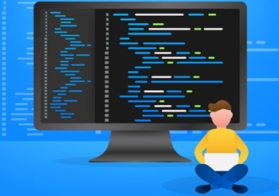
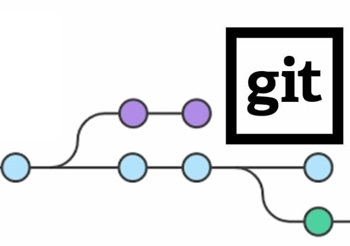

Git is a distributed version control system designed to help
developers track changes in source code during software development.
It allows multiple developers to collaborate on a project by managing
code versions, merging changes, and reverting to previous states if
necessary. Here's a breakdown of key features and concepts:
Key Features of Git:
Version Control: Git tracks changes made to files over time,
allowing you to review or revert to earlier versions of a project.
Distributed: Every developer has a complete copy of the
repository, including its history, making Git highly reliable and
decentralized.
Branching and Merging: Developers can create branches to work on
new features or fixes without affecting the main codebase. Changes
can be merged back into the main branch when ready.
Collaboration: Git supports collaborative development by allowing
multiple people to work on the same project. It resolves conflicts
when changes overlap.
Staging Area: Git has a staging area where changes can be reviewed
before they are committed to the repository.

Why do developers need Git?
Developers need Git for efficient version control, collaboration, and
project management. It tracks changes, allowing developers to revert
to previous versions if needed. Git’s
branching system lets developers work on separate
features or fixes without disrupting the main codebase, enabling safe
experimentation. Once changes are ready, they can be
merged back into the main project.
Git also facilitates collaboration, enabling
multiple developers to work simultaneously, even from different
locations. It helps resolve conflicts when changes overlap and
provides a full history of who made changes and
why, improving accountability.
Git’s distributed nature ensures that every
developer has a full copy of the project, serving as a backup, and
preventing data loss. Additionally, Git integrates well with
Continuous Integration/Deployment pipelines,
ensuring efficient, high-quality code delivery.
Its widespread adoption and open-source nature make it a standard
tool in modern software development.

What is a branch in Git?
A branch in Git is a separate line of development
that allows you to work on changes independently from the main
project. It creates a "snapshot" of the code at a specific point,
enabling you to work on new features, bug fixes, or experiments
without affecting the main codebase (usually called the
main or master
branch).
Branches are commonly used for:
Feature development: Work on a new feature in
isolation.
Bug fixes: Fix bugs without interrupting ongoing
work.
Collaboration: Multiple developers can work on
different branches and merge their changes later.
Once the work on a branch is complete and tested, it can be
merged back into the main branch. This process
helps maintain code stability and allows for parallel development.